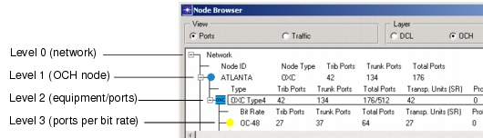

Viewing and Configuring Objects > Node Browser > OCH Node Browser
OCH Node Browser
The OCH Node Browser shows information about the optical node equipment and traffic related to specific nodes. The View setting (Ports or Traffic) determines the information that appears in each node's subtree, as well as the options that appear when you right-click on a node.
For information about the fields shown in the OCH Node Browser, see Table 4-7-OCH Node Browser: Treeview .
Figure 4-9 OCH Node Browser (Ports View)

Figure 4-10 OCH Node Browser (Traffic View)
- Node ID
- Node Type—OXC, WP-OXC, IXC, OADM or Patch Panel (PP)
- Trib Ports—Number of cross-connected tributary ports (total for node)
- Trunk Ports—Number of cross-connected trunk ports (total for node)
- Total Ports—Number of cross-connected ports (total for node)
- Mode—Opaque or Selective
- Reg—Number of flows that need regeneration
- WC—Number of flows that need wavelength conversion
- Tot.—Total used and total available regeneration/conversion capacity
- Change to <node_type>
- Set Allowed XC Types...
- Set OXC Type (OXC nodes only)
- Set IXC Type (IXC nodes only)
- Make Transparent/Opaque/Selective
- Set Regenerator Capacity
- Strip Regenerator Capacity
- Regenerate via DXC
- Configure OADMs (transparent mode only)—For more information, see Defining OADMs Manually.
If a node contains OADMs, you can double-click on the OADM to view more details. For more information, see Viewing OADM Trunk Capacity.These operations are available only if there is no traffic flowing through a node.In Traffic view, this level includes the following right-click menu operations:
(Traffic view)
(Ports view)
- Type—Equipment type
- Trib Ports—Number of tributary ports cross-connected by equipment type
- Trunk Ports—Number of trunk ports cross-connected by equipment type
- Total Ports—Number of ports cross-connected by equipment type
- Transp. Units—Number of transponders
- Prot. Transp. Units—Number of protection transponders.
Viewing OADM Trunk Capacity
To view the usage of OADM wavelengths, double-click on the OADM element in the OCH Node Browser (for descriptions of the fields, see Table 4-8-OADM Trunk Capacity Details Window ).
Figure 4-11 OADM Trunk Capacity Details Window
Viewing WP-OXC Ports
You can view and configure ports for integrated WP-OXCs using the OCH Node Browser (Ports view). This window supports the following operations for WP-OXC ports:
- Strip transponder capacity—Right-click on a port and choose Strip Transponder Capacity.
- Trib-Tap-Mix—If no traffic has been routed in the node and no ports have been used, you can select the WP-OXC type: Trib, Tap or Mux (for more information, see WP-OXC Architectures)
- View multiplexer utilizations—Double-click on a port to open the Multiplexer Details dialog box. This window shows the utilizations on the different terminal multiplexers in the node. If a multiplexer is not used (that is, if it has 0 percent utilization), you can right-click on it and change the port type, as illustrated in Figure 4-12-Viewing WP-OXC Ports in the OCH Node Browser (Ports View) .
WP-OXC nodes are available in transparent network mode only. For more information, see Transparent Networks .
Figure 4-12 Viewing WP-OXC Ports in the OCH Node Browser (Ports View)
Setting Allowed XC Types
Besides manually setting the type of cross-connect in a node via the Node Browser, you can also control the cross-connect types that the design actions can set in a node. In the "Allowed XC Types" dialog box, you can set the allowed and forbidden node types for DXCs, IXCs, OXCs, and WP-OXCs.
Procedure 4-1 Setting Allowed XC Types
- Right-click on one or more nodes in the Node Browser, at the DCL or OCH layer, and selected Allowed XC Types...
Figure 4-13 Allowed XC Types Dialog Box
- Select the appropriate tab for the cross-connect model (DXC, IXC, OXC, or WP-OXC) for which you want to set the allowed types. By default all cross-connect types that you have created are allowed.
- Use the > and < buttons to toggle allowed and forbidden node types of the selected node(s).
- Click OK to commit your changes.
The design action will not consider the forbidden node types to be used in the selected nodes.
End of Procedure 4-1
| Home © 1987-2007 OPNET Technologies, Inc. All Rights Reserved. This software may be covered by one or more U.S. Patents. See complete patent notice in the Legal Notices section. OPNET Support Center |